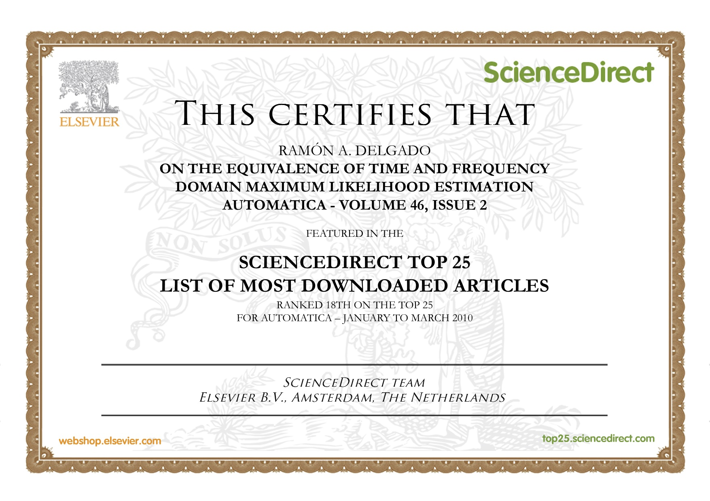

Publications
Journal articles
[J5] R.P. Aguilera, G. Urrutia, R.A. Delgado, D. Dolz and J.C. Agüero. Quadratic Model Predictive Control Including Input Cardinality Constraints.
To appear in IEEE Transactions on Automatic Control.
[ doi
]
[J4] R.A. Delgado, J.C. Agüero and
G.C. Goodwin. A novel representation of
rank constraints for real matrices. Linear Algebra and
its Applications, Vol 496:452-462, May 2016.
[ doi
| bib
@article{delgado2016anovel,
author = {R.A. Delgado and J.C. Ag\"uero and G.C. Goodwin},
title = {A novel representation of rank constraints for real matrices},
volume ={496},
Pages = {452--462},
year = {2016},
journal = {Linear Algebra and its Applications}}
]
[J3] R.A. Delgado and G.C. Goodwin. A
Combined MAP and Bayesian Scheme for Finite Data and/or Moving
Horizon Estimation. Automatica, Vol
50(4):1116-1121, April 2014.
[ doi
| bib
@article{delgado2016acombined,
author = {R.A. Delgado and G.C. Goodwin},
title = {A Combined MAP and Bayesian Scheme for Finite Data and/or Moving Horizon Estimation},
volume={50},
Number ={4},
Pages = {1116--1121},
year = {2014},
journal = {Automatica}}
| Replication material
]
[J2] J.C. Agüero, W. Tang, J.I. Yuz, R.A. Delgado and G.C. Goodwin. Dual time-frequency domain system identification. Automatica, Vol 48(12):3031-3041, Dec 2012.
[ doi
| bib
@article{aguero2012dual,
author = {J.C. Ag\"uero and W. Tang and J.I. Yuz and R.A. Delgado and G.C. Goodwin},
title = {Dual time-frequency domain system identification},
volume={48},
Number = {12},
Pages = {3031--3041},
year = {2012},
journal = {Automatica}}
]
[J1] J.C. Agüero, J.I. Yuz, G.C. Goodwin, and R.A. Delgado. On the equivalence of time and frequency domain maximum likelihood estimation. Automatica, Vol 46(2):260-270, Feb 2010.
[ doi
| bib
@article{aguero2010ontheequivalence,
author = {J.C. Ag\"uero and J.I. Yuz and G.C. Goodwin and R.A. Delgado},
title = {On the equivalence of time and frequency domain maximum likelihood estimation},
volume={46},
Number = {2},
year = {2010},
pages ={260--270},
journal = {Automatica}}
| Top 25 certificate
 ]
Conference presentations
[C8] R.A. Delgado, J.C. Agüero,
G.C. Goodwin and Eduardo M.A.M Mendes Application of Rank-Constrained Optimization to Nonlinear System
Identification. In 1st IFAC Conference on Modelling,
Identification and Control of Nonlinear Systems (MICNON 2015), Saint-Petersburg, Russia, 2015
[ doi
| bib@inproceedings{delgado2015application,
Author = {R. A. Delgado and J. C. Ag\"uero and G. C. Goodwin
and Eduardo M. A. M. Mendes},
Title = {Application of Rank-Constrained Optimization to
Nonlinear System Identification},
Booktitle = {1st IFAC Conference on Modelling, Identification and Control of Nonlinear Systems (MICNON 2015)},
Address = {Saint-Petersburg, Russia},
Year = {2015}}
]
[C7] R.A. Delgado, J.C. Agüero and
G.C. Goodwin. A Rank-Constrained Optimization Approach:
Application to Factor Analysis. In 19th IFAC World
Congress, Cape Town, South Africa, 2014
[ doi
| bib@inproceedings{delgado2014arank,
Author = {R. A. Delgado and J. C. Ag\"uero and G. C. Goodwin},
Title = {A Rank-Constrained Optimization approach: Application to Factor Analysis},
Booktitle = {19th IFAC World Congress},
Address = {Cape Town, South Africa},
Year = {2014}}
| Slides ]
[C6] R.P. Aguilera, R.A. Delgado, D. Dolz and J.C. Agüero. Quadratic MPC with l0-input constraint. In 19th IFAC World
Congress, Cape Town, South Africa, 2014
[ doi
| bib@inproceedings{aguilera2014quadratic,
Title = {Quadratic {MPC} with $\ell_0$-input constraint},
Author = {R.P. Aguilera and R.A. Delgado and D. Dolz and J.C. Ag\"uero},
Booktitle = {19th IFAC World Congress},
Address = {Cape Town, South Africa},
Year = {2014}}
]
[C5] R.A. Delgado, G.C. Goodwin, R. Carvajal and J.C. Agüero. A
Novel Approach to Model Error Modelling using the
Expectation-Maximization Algorithm. In 51st IEEE Conference on
Decision and Control (CDC), Maui, USA, 2012
[ download
| doi
| bib@inproceedings{delgado2012anovel,
Title = {A Novel Approach to Model Error Modelling using the Expectation-Maximization Algorithm},
Author = {R.A. Delgado and G.C. Goodwin and R. Carvajal and J.C. Ag\"uero},
Booktitle = {51st IEEE Conference on Decision and Control (CDC)},
Address = {Maui, USA},
Pages = {7327--7332},
Year = {2012}}
| Slides ]
[C4] R. Carvajal, R.A. Delgado, J.C. Agüero and G.C. Goodwin. An
Identification Method for Errors-In-Variables Systems Using Incomplete Data.
In 16th IFAC Symposium on System Identification, Brussels,
Belgium, 2012
[ doi
| bib@inproceedings{carvajal2012anidentification,
Title = {An Identification Method for Errors-In-Variables Systems Using Incomplete Data},
Author = {R. Carvajal and R.A. Delgado and J.C. Ag\"uero and G.C. Goodwin},
Booktitle = {16th IFAC Symposium on System Identification},
Address = {Brussels,Belgium},
Pages = {1359--1364},
Year = {2012}}
]
[C3] R.A. Delgado, G.C. Goodwin and A. Feuer. An on-line MUSIC algorithm
with application to sparse signal reconstruction. In 20th
International Symposium on Mathematical Theory of Networks and
Systems (MTNS), Melbourne, Australia, 2012
[ pdf
| bib@inproceedings{delgado2012anonline,
Title = {An on-line {MUSIC} algorithm with application to sparse signal reconstruction},
Author = {R.A. Delgado and G.C. Goodwin and A. Feuer},
Booktitle = {International Symposium on Mathematical Theory of Networks and Systems (MTNS)},
Address = {Melbourne, Australia},
Year = {2012}}
| Replication
material ]
[C2] R.A. Delgado, J.C. Agüero, G.C. Goodwin and
J.I. Yuz. Two-degree-of-freedom anti-aliasing technique for
wide-band networked control. In 18th IFAC World Congress,
Milan, Italy, 2011
[ download
| bib@inproceedings{delgado2011twodegree,
Title = {Two-degree-of-freedom anti-aliasing technique for wide-band networked control},
Author = {R.A. Delgado and J.C. Ag\"uero and G.C. Goodwin and J.I. Yuz},
Booktitle = {18th IFAC World Congress},
Address = {Milan, Italy},
Pages = {8884--8889},
Year = {2011}}
| Poster ]
[C1] R.A.Delgado, J.I. Yuz, J.C. Agüero
and G.C. Goodwin. A numerical study of time and frequency domain maximum likelihood
estimation, In Preprints of the 15th IFAC Symposium on System
Identification, pp:1133-1138, Saint Malo, France, 2009
[ doi
| bib@inproceedings{delgado2009anumerical,
Title = {A numerical study of time and frequency domain maximum likelihood estimation},
Author = { R.A. Delgado and J.I. Yuz and J.C. Ag\"uero and G.C. Goodwin},
Booktitle = {15th IFAC Symposium on System Identification},
Address = {Saint Malo, France},
Pages = {1133--1138},
Year = {2009}}
| Slides ]
Technical reports
[T1] R.A.Delgado, J.C. Agüero and G.C. Goodwin. A novel representation of rank constraints for non-square real matrices, ArXiv:1410.2317, 2014
[ download
| bib@misc{delgado2014anovel,
Title = {A novel representation of rank constraints for non-square real matrices},
Author = { R.A. Delgado and J.C. Ag\"uero and G.C. Goodwin},
Howpublished = {arXiv:1410.2317},
Year = {2014}}
]
Thesis
[Th1] R.A.Delgado Rank constraints and
error quantification in restricted complexity problems, PhD
Thesis, The University of Newcastle, Australia, 2014
[ download
| bib@misc{delgado2014thesis,
Title = {Rank constraints and error quantification in restricted complexity problems},
Author = { R.A. Delgado},
Howpublished = {PhD Thesis, The University of Newcastle},
Year = {2014}}
]
{kind=link}